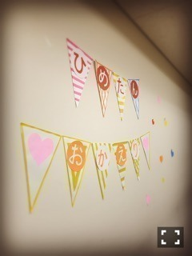
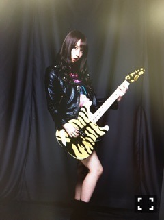
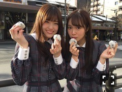
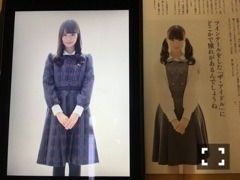

おはようございます～
日曜の夜は、らじらー！サンデー
前回のゲストは井上小百合ちゃんでした。
乃木坂三大名言メーカーのひとり！！
小百合がいる安心感半端なかった！
温泉トークのコーナー本当に楽しかった！
ひめたん久々の2時間でしたが
全く久々感なくて終始リラックスしてたーー
3月にサプライズした時は
内心ガクガクブルブルだったので
どうかな？ってちょっと思ってたのですが
この放送を経てホッとしました。
おたよりもいっぱい届いていたと聞いて
いやあ、好スタートですね！
途中パシャパシャって
聞こえた方もいらっしゃったと思うけれど
実は取材が入ってました、詳細は追って！
声優アーツが最終回でした(´；ω；｀)
「パワーボイスA」という
新番組になるんですね。
らじらーサンデーは
今週から21:05開始になります～

楽屋に入ったら
こんな素敵なことに。
ただいま( ˆωˆ )
うーん、
お仕事に関して
報告することなさすぎるので
2月発売の雑誌のオフショット今更貼る。

YOUNG GUITAR

月刊Newtype

Top Yell
このTop Yellさんのお写真感動しちゃった、
初めてアンダーセンターなった時の記事と
同じ画角で撮ってるの。他の写真も。
当時の雑誌がお手元にある方は
是非比較してみてくださいね
マネージャーさんが
おひめ大きくなったね～って
親心で見てくれたよ( ˇωˇ )
モバイルメール再開しました！ではでは
(＊´・ω・＊)